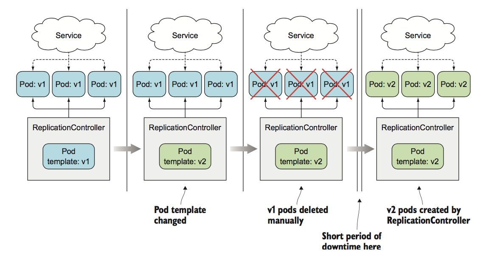
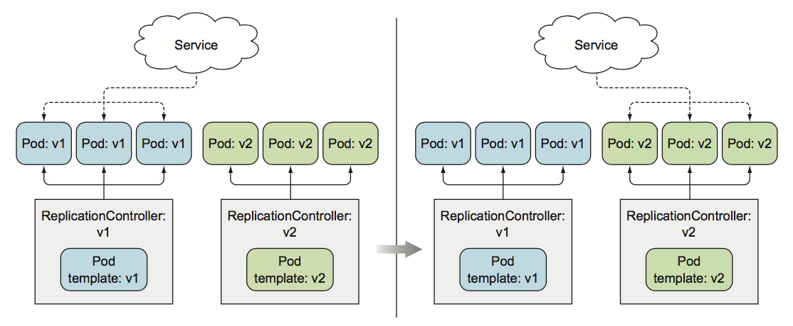

deployment background
更新运行中的一组pod
假如你有一个业务集群，有一组pod对外提供服务，客户端通过service进行访问服务， 如下图：
当 pod 一开始使用v1版本的镜像运行第一版应用， 然后又进行了业务迭代开发，发布了v2版本，并打包成镜像，将其push到镜像仓库，tag 为v2；如果想使用新版的(v2)的镜像，我们该怎么做呢？ pod是否支持直接修改镜像呢？ 答案是不可以的。只能通过删除原pod， 并使用新的镜像创建新的pod才可以实现；总结方法如下：
1. 直接删除所有pod， 然后创建新的pod
2. 先创建新的pod， 等待成功之后， 再删除旧的pod。可以一次性建全部pod，然后一次性删除旧pod，也可以按顺序创建新的pod，然后逐渐删除旧pod。
两种方案各有优缺点：
1. 第一种方法会导致业务短暂不可用
2. 业务支持两个版本同时对外提供服务(兼容性很重要)。
删除旧pod，创建新pod
回顾一下 rc的用法，如果我们有一个rc集群， 就可以直接替换镜像，然后删除pod实例即可，因为rc会给我们自动创建,如下图： 
先创建新pod， 再删除旧pod
如果短暂服务不可用，无法接受， 那么我们可以新创建出pod来，再删除旧pod，这会需要更多的硬件资源， 因为你将在短时间内运行两倍数量的pod。实现起来略
麻烦，需要结合rc和service，比如：
pod 是由service对外提供服务的，运行新版本pod之前， service 只把流量打给初始版本的pod。 等新版本pod创建成功，确保无误之后，再通过修改service的标签选择器，将流量切换到新的pod。这样就是所谓的蓝绿部署。切流成功之后，如果一切正常，那么删除初始版本的rc即可；

验证： 创建初始集群和service：
apiVersion: v1
kind: ReplicationController
metadata:
name: kubia-v1
spec:
replicas: 3
template:
metadata:
name: kubia
labels:
app: kubia
spec:
containers:
- image: luksa/kubia:v1
imagePullPolicy: IfNotPresent
name: nodejs
---
apiVersion: v1
kind: Service
metadata:
name: kubia
spec:
type: NodePort
selector:
app: kubia
ports:
- port: 80
targetPort: 8080
创建v2版本的集群：
apiVersion: v1
kind: ReplicationController
metadata:
name: kubia-v2
spec:
replicas: 3
template:
metadata:
name: kubia
labels:
app: kubia-v2
spec:
containers:
- image: luksa/kubia:v2
imagePullPolicy: IfNotPresent
name: nodejs
通过修改service的label selector切流:
$ kubectl set selector svc kubia 'app=kubia-v2'
$ curl 10.254.184.128:80
This is v2 running in pod kubia-v2-g6rvw
执行滚动升级
除了像上面那种一次性操作的情况，还可以执行滚动升级操作，好处是可以逐步替换原pod了；实现方式就是对旧版rc进行逐步缩容，对新版rc逐步扩容。
$ while true;do curl 10.254.184.128:80;done;
$ kubectl rolling-update kubia-v1 kubia-v2 --image=luksa/kubia:v2 --v 6
Command "rolling-update" is deprecated, use "rollout" instead
Created kubia-v2
Scaling up kubia-v2 from 0 to 3, scaling down kubia-v1 from 3 to 0 (keep 3 pods available, don\'t exceed 4 pods)
Scaling kubia-v2 up to 1
Scaling kubia-v1 down to 2
Scaling kubia-v2 up to 2
Scaling kubia-v1 down to 1
Scaling kubia-v2 up to 3
Scaling kubia-v1 down to 0
Update succeeded. Deleting kubia-v1
replicationcontroller/kubia-v2 rolling updated to "kubia-v2"
观察在升级过程中svc的变化，以及两个rc版本kubia-v2和kubia-v1的变化；
rc变化：
 service变化：
service变化：

思考：这个过程哪里设计的不合理？
1. 整个过程都是kubectl客户端发起的；
2. 整个过程直接修改pod和RC的标签，这是不符合k8s设计的；
总结：
- 这种升级方式简单粗暴，试想如果在升级过程中，被动的中断了，那么pod和rc都会处于一种中间的状态。
- k8s 强调的是通过 controller 不断的收敛达到期望状态的，无论是pod部署、发布更新或副本数伸缩；整个过程是自动的，而不是手动完成的；
- 只需要在pod 的spec中更改期望的镜像版本即可，让k8s自动的创建新的pod替换旧的pod。
综上所述，k8s 引入了一个新的资源Deployment；